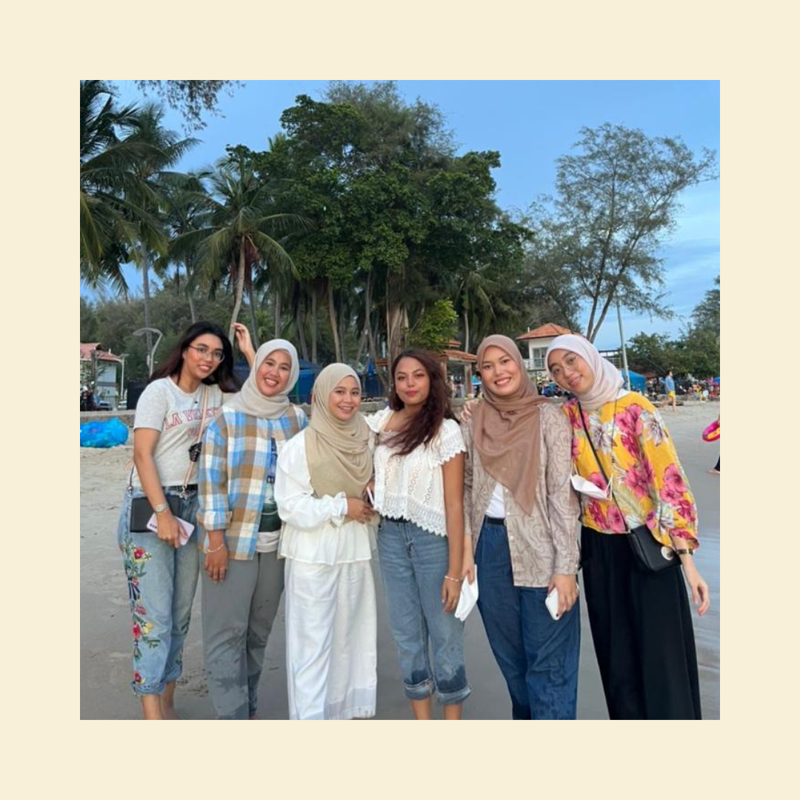
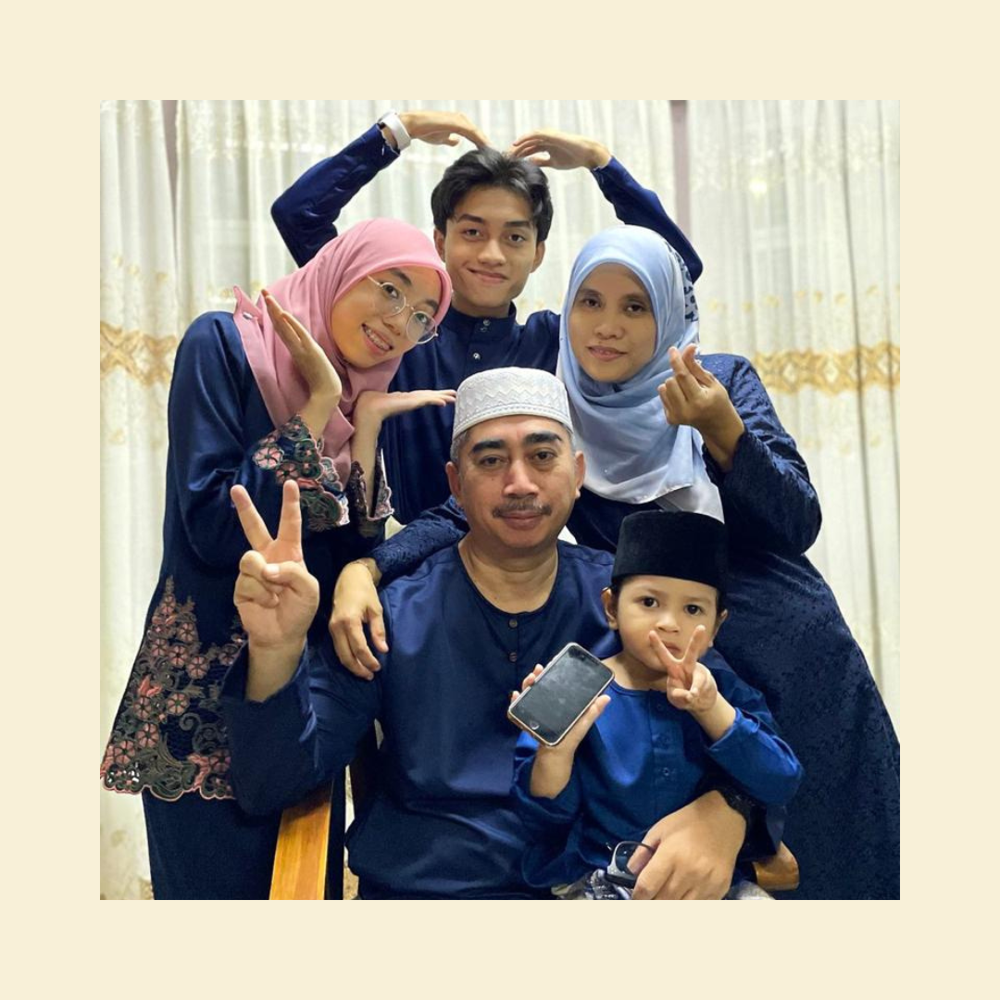
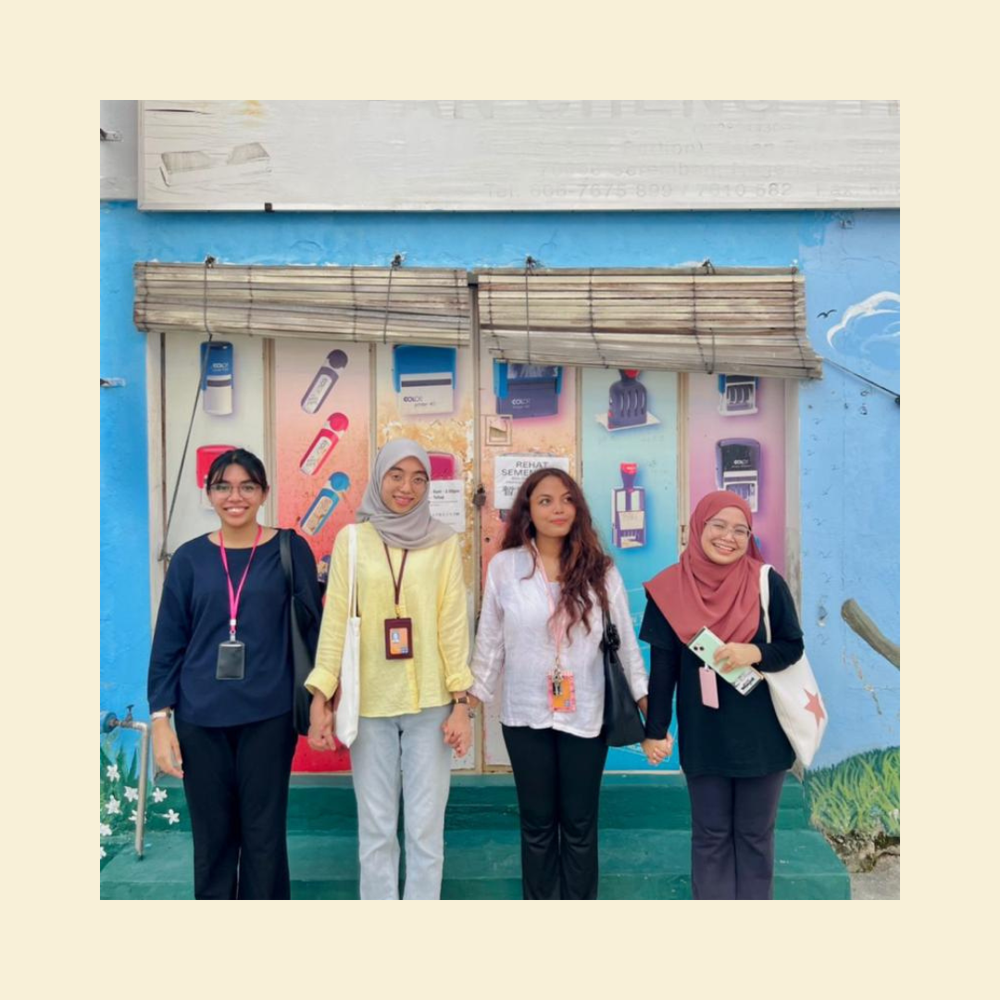

.png)
Who Are We?
Cooking can be done with or without passion, creativity, or love. The World of Recipe is adamant that the effort you put into a recipe is equally as significant as the ingredients you use. We are not alone either. Don't worry if you don't know how to cook; "The World of Recipes" is here to make cooking wonderful meals less stressful and more enjoyable.

The World of Recipes website was established in 2022 by UITM Rembau, Negeri Sembilan student Nurul Madihah Binti Md Zawawi, who enjoys cooking. We hope that this website might benefit you and the wider community.
The World of Recipes is a place where everyone is welcome, regardless of their colour, religion, gender, sexual orientation, age, background, or talents. We intentionally seek to make this inclusivity evident in every aspect of the site, from the users to the recipes we offer, because we aspire to be a resource for any home cook.
Although we are not perfect, we strive to do more good than wrong.
My Support Teams ♥
|  |  |  |